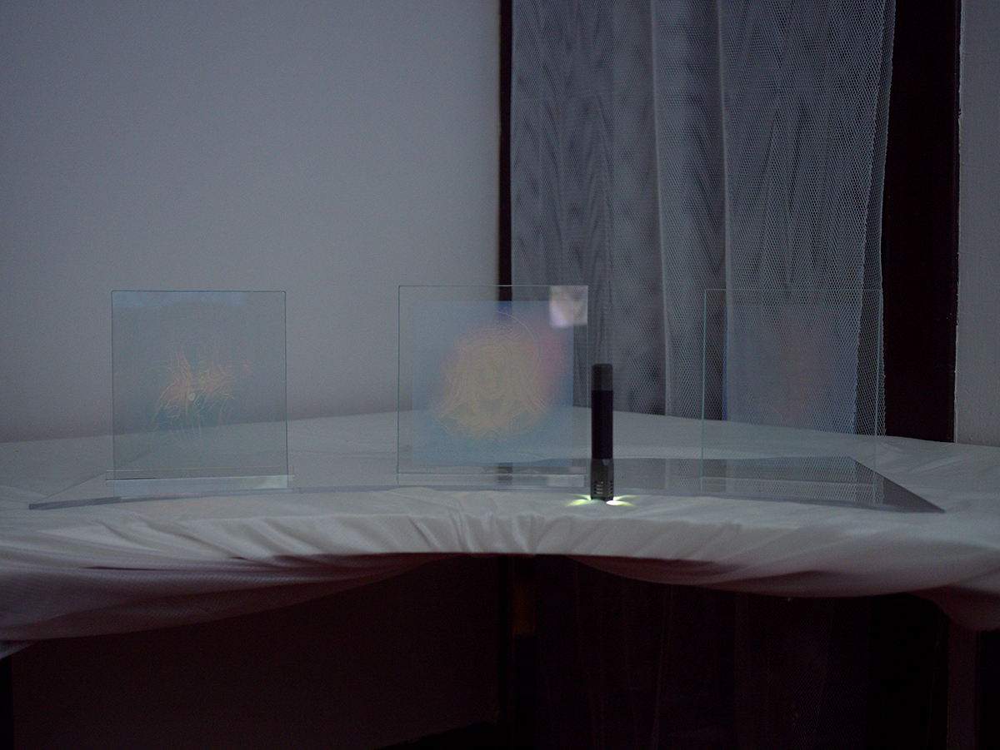
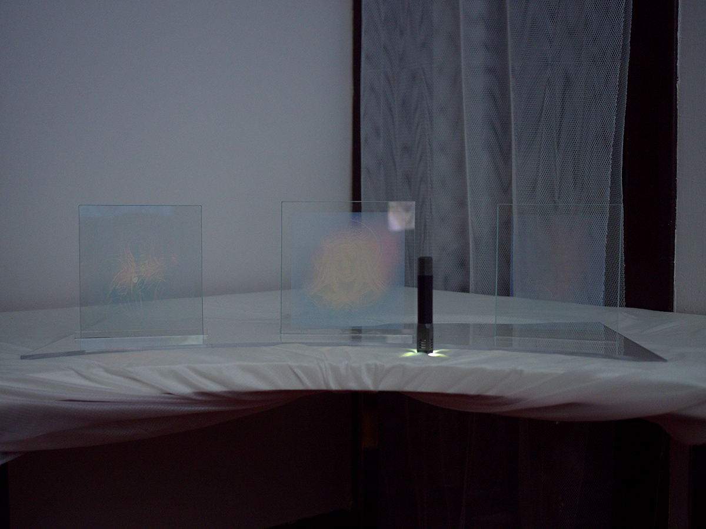

Genuflexion
February 4, 2017
A multimedia exhibition featuring Cat Bluemke, Jennifer Chan, Maya Ben David, Shawné Michaelain Holloway, Analú Lopez, and Iryne Roh.
While the body has been bending for millenia, bending at the knee has a special significance of deference and submission. Genuflexion mandates that you kneel to the art, cushions provided. Works in the exhibition open up the relationship between the human body and the material planet. Drawing from vast digital and physical landscapes, the artists repurpose religious iconography, apocalyptic narratives and unctuous slime space to question what is feminine, what is visible, and what is our future?


Body Lensing, Iryne Roh
Gravitational lensing is when the light rays of a very distant galaxy is distorted by the massive gravitational field of a cluster that is closer to the observer, producing an optical light bend in the space. This tells us that a) mass curves the space around it, and therefore space is not always constant, and b) light does not always travel in a straight line.
iryne is a soft-bodied media artist currently working and living in chicago.


(Somos) celeste desvanecimiento/ (We are) a fading Celestial, Analú Lopez
The phenomenon of the female homicides in Ciudad Juárez, called in Spanish feminicidio (“feminicide”) involves the violent deaths of hundreds of women and girls since 1993 in the northern Mexican region of Ciudad Juárez, Chihuahua, a border city across the Rio Grande from the U.S. city of El Paso, Texas.
As of February 27, 2005, the number of murdered women in Ciudad Juarez since 1993 is estimated to be more than 370. A government committee found a similar array of causes for the earlier wave of killings.
After surveying 155 killings out of 340 documented between 1993 and 2003, the committee found that roughly half were prompted by motives like robbery and gang wars, while a little more than a third involved sexual assault.
The murders of women and girls in Ciudad Juárez since 1993 have received international attention, primarily due to perceived government inaction in preventing violence against women and girls and bringing perpetrators to justice.
I created this piece for a Dia de los Muertos (Day of the Dead) annual exhibition at The National Museum of Mexican Art in Chicago.
It was hung as part of a “Tzompantli” (or skull rack, a type of wooden rack or palisade documented in several Mesoamerican civilizations, which was used for the public display of human skulls, typically those of war captives or other sacrificial victims).
The main image within the skull is a projection of the Aztec moon goddess, Coyolxauqui.
The moon goddess is a very powerful figure within Mesoamerican/Mexica culture.
The correlation between Coyolxauqui being brutally dismembered by her brother in the legend is a violence still experienced by the women of Juárez at the hands of men to this day.
Analú López photographic work ranges from social documentary to digital manipulations and photographic essays with intimate portraits. She has participated in a number of solo and group exhibitions in Chicago, Texas, and Mexico.


SlimeGirlsFan, Maya Ben David and Tobias Williams
The work is comprised both of hand sculpted elements as well as digital animations and renders created using 3d scanning technology.
Using modeling clay Ben David has been sculpting figurines called “Slime Girls”. Williams has then been 3d scanning these figures and manipulating and animating them digitally.
Slime Girls first derived from a Japanese role playing game called “Monster Girl Quest”. As the name suggests, Slime Girls are animated women that look like they are made of slime. Slime Girls are in a sense, modern day digital sirens.
Their roles usually involve luring men to their deaths with their gelatinous female figure. What is interesting about Slime Girls is the sophistication and thoroughness of their online fan community. There are online fan created encyclopaedias devoted to documenting the different types of Slime Girls; Regular slime, Dark slime, Bubble slime, Slime queen, Sea slime etc. Each species gets their own demeanour, ideal living environment and back story. The dynamics of power the Slime Girls phenomenon is both empowering and problematic. They are a species of exclusively woman and are depicted in a provocative manner clearly for the benefit of the male gaze.
Contrarily, their position as huntress of men is in opposition to the classic damsel in distress paradigm.


daughter_of_the_cage : “castle_of_the_white_prince” or an_offer_i_couldnt_accept.mp4, Shawné Michaelain Holloway
shawné michaelain holloway is an internet artist using sound, video, and performance to re-stage personal narratives through materials appropriated from the web. her work shapes the rhetorics of technology and sexuality into a tool for exposing structures of oppression. the work has been exhibited internationally in spaces like the Festspielhaus Hellerau (Dresden, DE), Lafayette Anticipation (Paris, FR), and on NTS Radio (London, UK.)
 

Reliquaries, Cat Bluemke
Reliquaries is a series of experimental DCG holograms, using light refracted light to
draw simplified images of Catholic martyrs. The project compares the labour intensive
process of analogue holography in contemporary art to the arcane worship involved in
Christian Catholicism. Far from a futuristic aesthetic, holographic technology predates
the entrance of the screen by decades. MIT, Chicago, and Toronto had world-
renowned research programs in applications of holography, in time to be completely
forgotten with the superiority of the screen. In an era of screen-based imagery, the
preciousness of holography outweighs its use; comparatively the reliquaries of Saints
recognized a value in the preservation of antiquated knowledge.
Cat Bluemke’s interdisciplinary practice explores the relationships of culture and technology. She works both independently and collectively, co-managing the Toronto based Tough Guy Mountain new media collective that applies bureaucratic practices as artist medium. Her independent practice combines neoliberal strategies with parafictional realities. She is pursuing her MFA at SAIC in the department for Design for Emerging Technologies.

Equality, Jennifer Chan
Jennifer Chan makes remix videos, gifs and websites that contend with gendered affects of media culture. Chan had solo presentations at Transmediale 2013 (Germany), Future Gallery (Berlin), The Nightingale (Chicago), Images Festival (Toronto), Vox Populi (Philadelphia) and recently LTD (Los Angeles). Her work has been featured in Art Forum, Rhizome, Leap, Furtherfield, Sleek Magazine, and Dazed Digital. She recently produced commissions for Artslant, Mexico Projects and Kunsthaus Langenthal. Chan was born in Ottawa (Canada) and currently lives in Toronto.